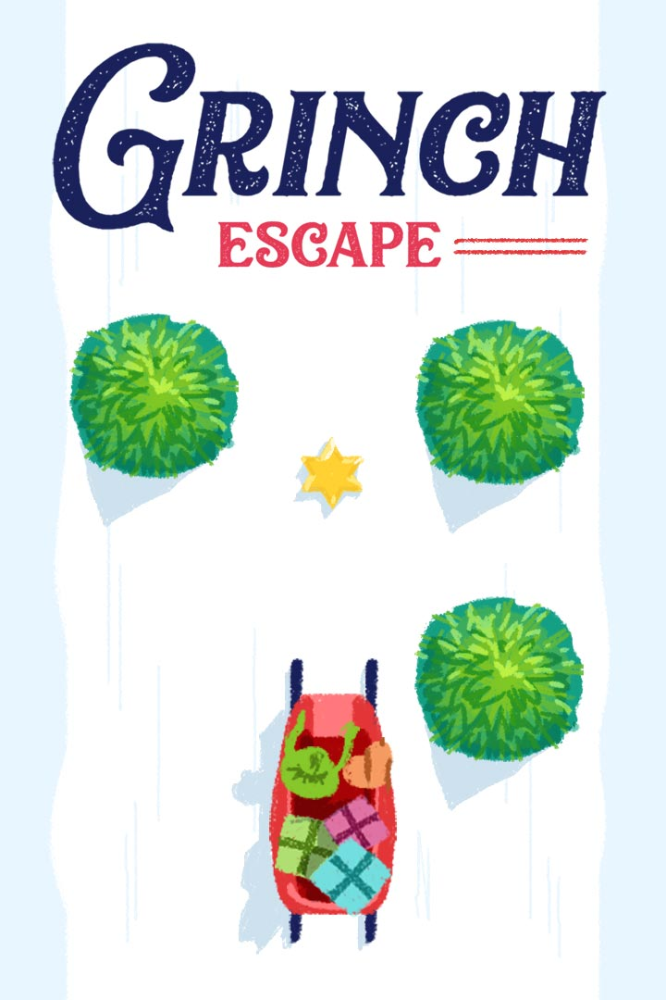

GAME OVER
Puntuación total:
El escape del Grinch
El Grinch logró reunir todos los regalos de los Quién y ahora intenta escapar con ellos!
Tu objetivo es ayudarlo a bajar la montaña sin estrellarse, recolectando las estrellas en el camino, pero ten cuidado, la montaña es muy empinada y mientras más distancia recorras mas dificil será bajar la cuesta
(Usa las flechas del teclado para moverte)
Music by Adam Vitovsky